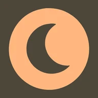

Apps/Gloam

Gloam
A screen dimmer that goes below your phone's minimum brightness. Free, ad-free, and entirely on your own phone: no account, no sign-up, no server.
Android's brightness slider stops at a floor. On most phones that floor is still too bright to read in a properly dark room. Gloam is the range underneath it.
01What it does
Dims past the floor. One control, from barely dimmed to very nearly dark . Gloam first takes the backlight down to the lowest your phone allows,…
- Dims past the floor. One control, from barely dimmed to very nearly dark. Gloam first takes the backlight down to the lowest your phone allows, then draws a shade over the screen to go the rest of the way.
- Warms the screen. A separate control tints the shade, and a second bar picks the tint, from amber to deep red. The tint eases off on its own as the dim level nears its darkest, so the controls together always leave something readable underneath.
- Sets everything from a preset. Reading, Evening and In bed each set the dim level, the warmth and its colour in one tap, with a line saying what each is for. Move any control afterwards and you are simply on your own settings.
- Brings the controls to where you are. Tap the ongoing notification and a small panel opens over whatever you are reading. It sits above the shade, so it stays readable at full dim, and you adjust the dim against the page itself rather than against Gloam's own screen. The app icon opens a compact version of the same controls; Settings can make it open the whole app instead.
- Dims on a schedule. Either two clock times, on at one and off at the other, including a window across midnight — or sunset to sunrise, moving with the season. Sunset is estimated from your phone's time zone, or worked out from its approximate location if you allow that.
- Turns itself off. A shade you start by hand comes down after a while you choose, two hours unless you say otherwise, so you never unlock a phone you cannot read the next morning. You can set that to Never. A scheduled shade comes down at the end of its window.
- Comes back after a restart. A shade that was on when the phone switched off is put back when it starts again.
02What it cannot do
Worth knowing before you install: It does not make your screen emit less light than the backlight floor. Nothing an app can install can do that…
Worth knowing before you install:
- It does not make your screen emit less light than the backlight floor. Nothing an app can install can do that — the floor belongs to the display driver. Gloam gets the backlight to that floor and then puts a dark layer in front of it. The result reads as far dimmer; the panel is still lit.
- A few things draw above it. System permission dialogs and some secure screens sit above every app's overlay by design, so they will appear at full brightness. That is Android protecting you from apps like this one, and it is working as intended.
- It cannot dim the lock screen. Android shows the lock screen at your phone's own brightness, above every app. Keeping that brightness low at night is the only fix.
- The shade never takes your taps. Every touch passes straight through to whatever is underneath, and while it is on there is always an ongoing notification that leads to the controls and their Stop button. Both are deliberate: an overlay over every other app has to be impossible to get stuck behind.
- Some screens flicker at low brightness. Many panels switch to a flicker too fast to see once their backlight is turned far down. Settings explains the trade-off, and lets you keep the backlight where it is and let the shade do all the dimming.
- Some phones stop it. Aggressive battery managers — Xiaomi's especially — will kill the service on their own. If the shade vanishes without you touching it, that is your ROM, and the fix is in its battery settings rather than in Gloam.
Gloam is a dimmer. It makes no claim about your eyes, your sleep or your health.
03Your data stays on your device
There is no backend to send anything to. Gloam has no account, no analytics and no network permission at all. It stores its settings on your…
There is no backend to send anything to. Gloam has no account, no analytics and no network permission at all. It stores its settings on your phone, and your phone's approximate location only if you ask the schedule to use it — rounded to about 11 km, and never included in backups. The details are in the
04Support
gloam.support@maksforge.com — an ordinary mailbox that a person reads.
gloam.support@maksforge.com — an ordinary mailbox that a person reads.
05The source
Built in the open at github.com/maks-sredniawa/gloam .
Built in the open at github.com/maks-sredniawa/gloam.